Termbase
Utilization of the "Minna no Jidou Hon'yaku"
glossary
on
the Trados Termbase
feature.
Good
for displaying translation candidates
or
achieving
translation
consistency.
Find
out more about Trados
Termbase
in
the Trados
Documentation.
※ Note
that no new term can be registered on
Trados.
For
new registration, please visit the "Minna no Jidou Hon'yaku"
site.
Project Settings > Language Pairs > All Language Pairs >
Termbases
Use
> TeXtra
Termbase
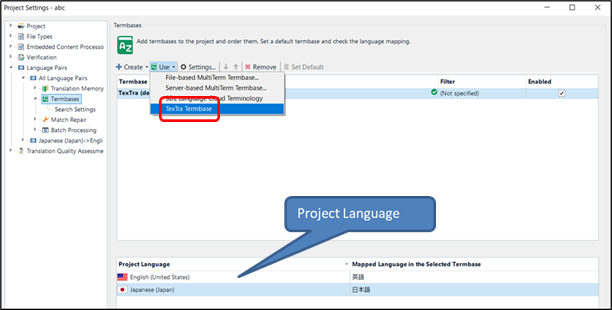
Select a glossary(ies) to
search.
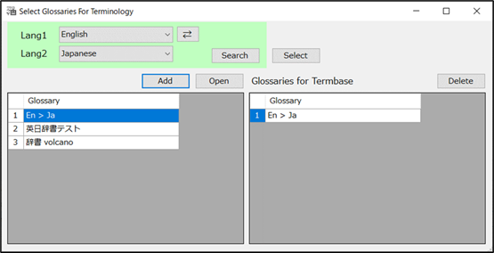
Then, set the project
language.
The results of the glossary
search
can
be viewed on the
editor.
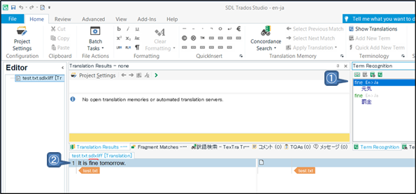
① Search of the glossary(ies) for
the selected
word/phrase.
Can
be executed on the "Termbase Search" pane of the same
page.
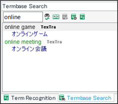
You can set the settings to
include the dictionary name(s) in the search
results.
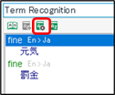
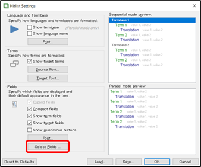
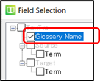
② Marking of terms registered in the
glossary(ies)
utilizing
a Trados
feature.
Click on the "View Term Details"
button
to
see the details about the marked
term.
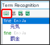
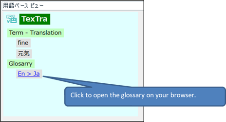
- Register
term
Register
terms to the glossary in the
site.
It
is utilized to translation using glossary (custome
tlanstaion.)
Select
a original text to register as a term on the translation
editor.
You can select tlanslation text as
well.
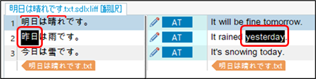
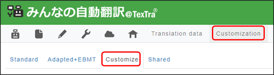
Push
"Add New Term" on Menu > Home >
Terminology.
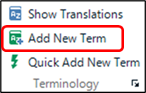
Select
a glossary to register a
term.
Input
original and translation text, and push
To
modify and delete terms,
push
"Open" button and edit on the editor screen of the
site.
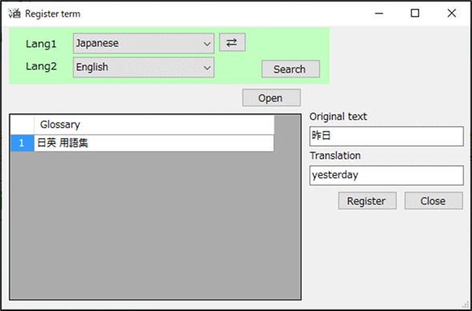